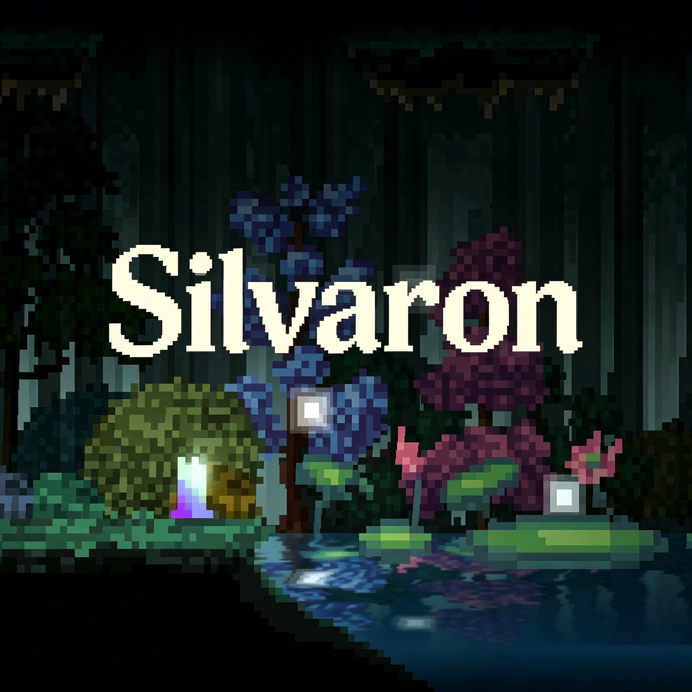
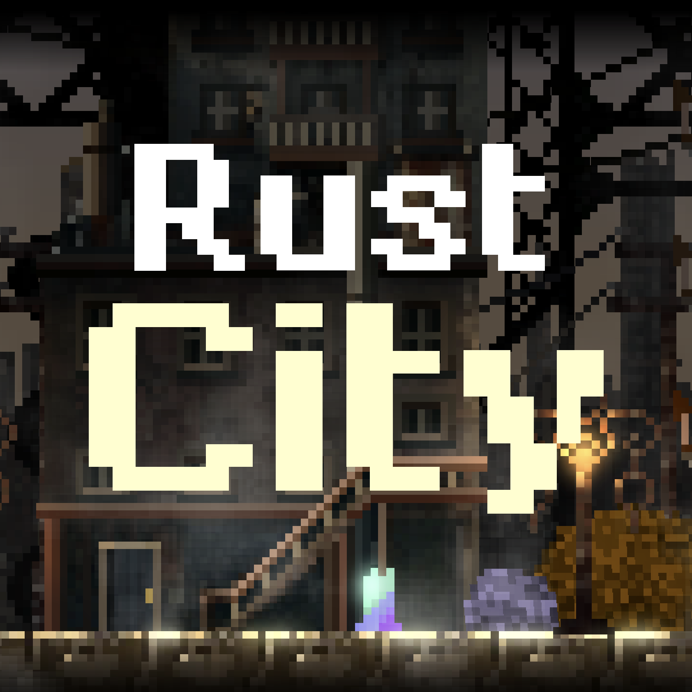
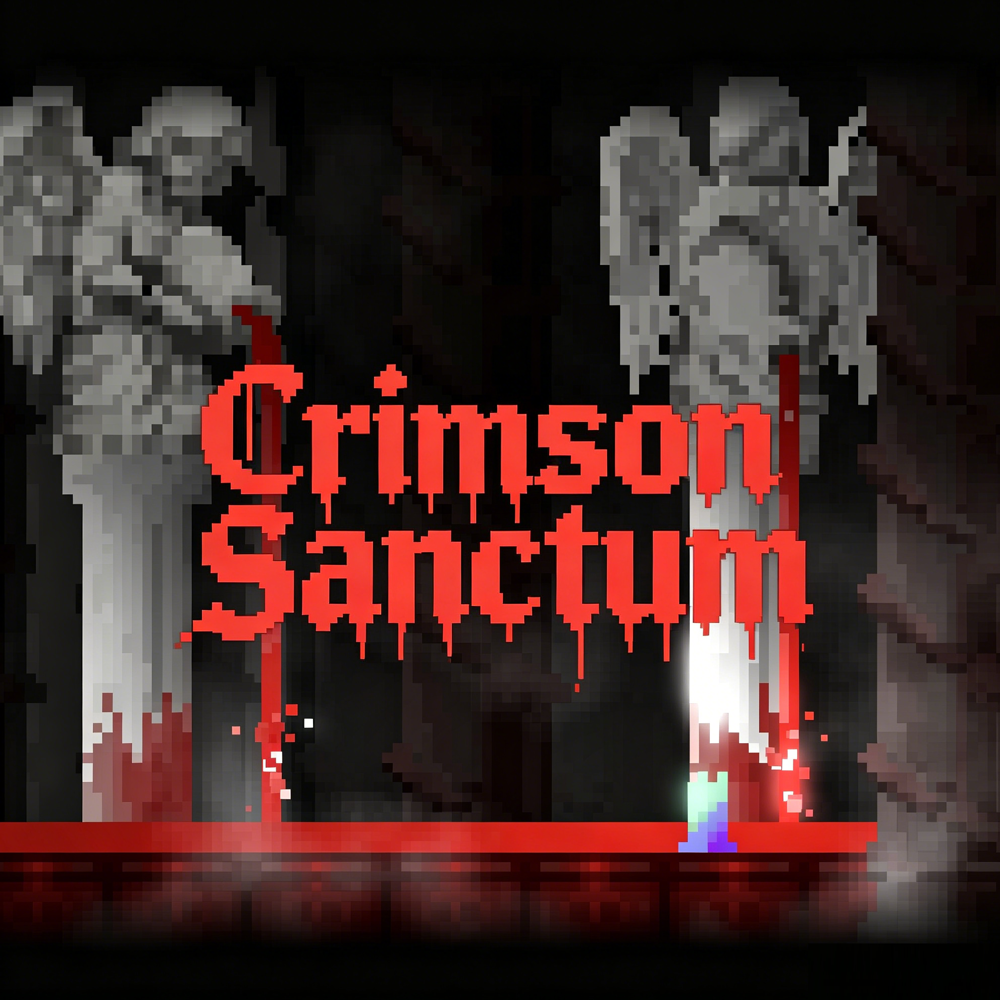

Personal site & portfolio — pick a world to explore it in



Theme music, one track per world.
Switches the language of the whole site.
The street from before dawn to sunrise.
Wipes the world choice, music & language settings, and the runner best score, then reloads.